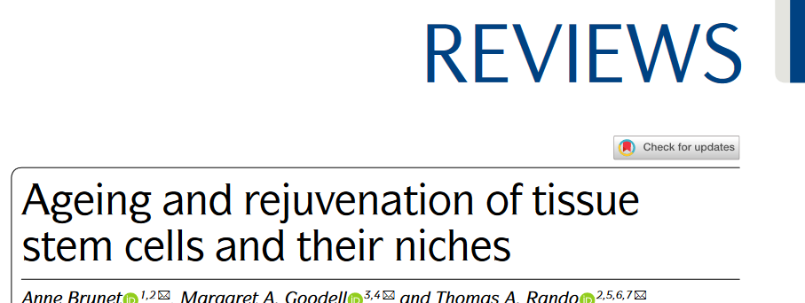
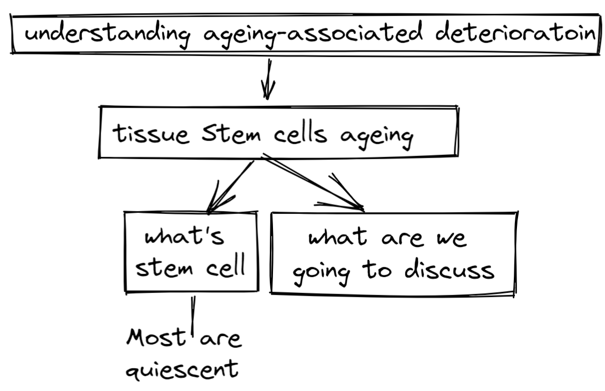
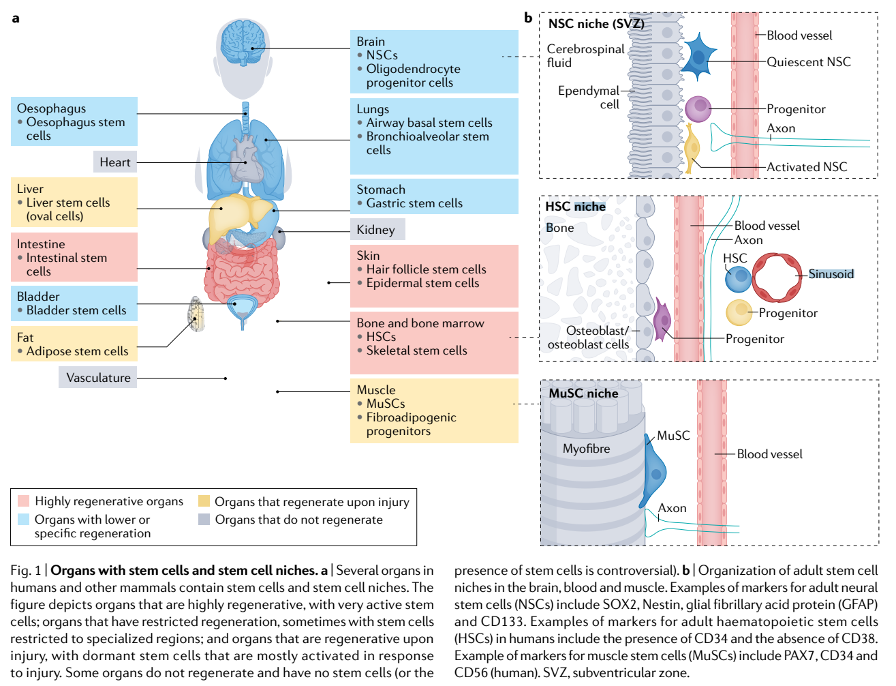
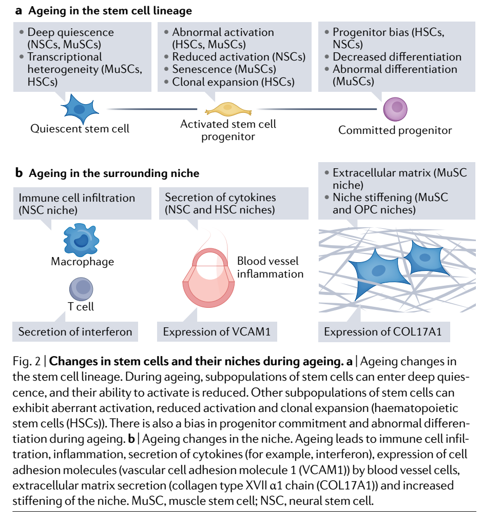
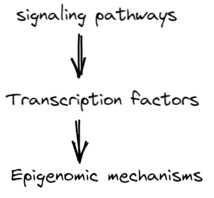
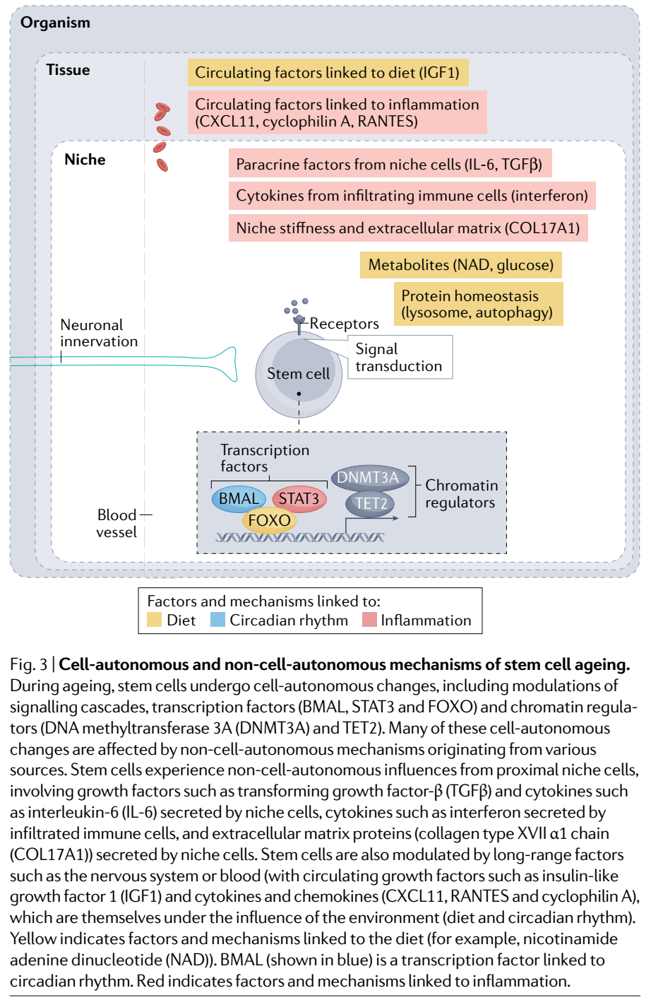

I really love this review because it provides me new inspiring ideas and get me into the field of aging stem cells quickly. It also has a very clear logic structure.
 Stem cell function is crucial for tissue homeostasis. Their dynamics relies on both the cell itself and its interaction with the local and sytemic environment. The review will the topic of aging and rejuvenation of tissue stem cells and their niches in three ways:
- cellular and molecular mechanisms during aging in different tissues and potential rejuvenation strategies.
- the interaction between different cell types, non-cell-autonomous mechanisms between ageing niches and stem cells and the influence of systemic factors.
Perspectives and remaining questions
- Finely map stem cell subpopulations in different tissues in old individuals.
- Understanding the mechanisms of clonal expansion during ageing and developing interventions to prevent transformation to cancer.
- systematically identify the immune cells present in stem cell niches and determine whether their clonal expansion is due to the presence of age-specific antigens.
- Identifying transcription factors that could be manipulated to reprogram stem cells into younger ones is a topic of active investigation.(why can’t to achieve this through analyzing scRNA-seq data in younger mice and old mice?)
- It will be interesting to determine whether the three-dimensional chromatin structure, which is particularly important for stem and progenitor states105, is affected by ageing.
- how the various components of the protein homeostasis machinery (for example, proteasome, lysosome, autophagy and chaperones) respond to cell–cell interaction and environmental stimuli that are prevalent during ageing, such as inflammation?
- it will be important to compare in a systematic manner how different pathways (protein homeostasis, metabolism, chromatin and transcription factors) impact stem cells and determine how these pathways may interact in response to external stimuli to modulate stem cell ageing and rejuvenation
Introduction
The logic of introduction are as follows:  In our body, many organs have stem cells and their distribution is different. 
Concepets
- CD34: Sialomucin, a glycosylated transmembrane protein that is expressed by several stem cells, notably muscle stem cells and, in humans, haematopoietic stem cells.
- Fibrogenic state: Fibrogenic state State characterized by abnormal deposition of extracellular matrix proteins and scarring of the tissue.
- DNA methyltransferase 3A (DNMT3A). Enzyme that adds methyl groups to cytosines in DNA.
- Inflammatory cytokines Signalling molecules secreted from immune cells or other cell types that promote inflammation
- ATM Serine and threonine protein kinase that is recruited at and activated by double-strand breaks in DNA
Defects in stem cells during ageing
They list four types of dysfunction of the ageing stem cells.

reduced ability to produce committed progeny.
A main feature of ageing is a reduced ability of somatic stem cells to produce new differentiated cells in organs like brain, muscle, fat, skin and lung. The major technologies used are single-cell RNA sequencing and lineage tracing.
Examples
- In brain, the number of activated Neural stem cells decreased with ageing while the timing is still debated.
- In blood, old HSCs would generate fewer lymphoid cells and skewed towards the myeloid lineage.
- In muscle, old MuSCs has slower kinetics.
Heterogeneity of quiescent stem cell pools with ageing
Aged individuals has higher stem cell heterogeneity. For example, a subset of NSCs will enter a deeper irreversible quiescence state. (So can we make cancer stem cells sleep forever rather than make them die?). But some subsets seem to be protected from the ageing effect.
Abnormal fate
During ageing, some stem cells may enter quiescent state permanently while others could be abnormally activated. This is usually characterized as a biased progenitors.
summary
Ageing stem cells may have declined number, more heterogeneity, abnormal fate. We should be aware that these effects are not a monotonous process, they instead reflects the different phases in our life.
Somatic mutations and clonal competition in stem cell
pools with ageing Higher heterogeneity usually leads to higher competition among populations because variant stem cells have different survival and proliferative advantage. A relevant process is clonal expansion, which is thought to be a normal process associated with ageing in all tissues. The detailed mechanisms is not clear enough yet.
Accumulation of ageing markers
During, stem cells would accumulate transcriptomic and proteomic changes.
However, an interesting phenomenon is that activated NSCs exhibit fewer transcriptomic changes. This is perhaps because activated NSCs don’t have enough time to accumulate changes or changes are diluted. The muscle stem cells exactly the opposite. The reasons why they have such a huge difference is not clear yet.
Consistently, stem cells usually upregulated ECM proteins and genes related to cell adhesion. Upregulation of cell adhesion markers in HSCs may be a direct indicator of their inflammatory state and may correlate with the bias towards myeloid cell production.
Defects in stem cell niches during ageing
- Age-dependent changes in niche cells during ageing.
- The infiltration of different types of immune cells in stem cell niches.
Age-dependent changes in soluble factors and the stem
cell milieu. Many solution factors(cytokines, growth factors, metabolites and nutrients) around the stem cell pools also change significantly during ageing. For example the inflammatory cytokines partially caused by infiltrating immune cells.
Age-dependent changes in the biophysical properties of
the niche
Stem cell niches become stiffer during ageing, and they exhibit drastic changes in ECM composition. This phenomenon has been observed in tissues like ageing brain, bone marrow, skeletal muscle and skin. This may contribute to stem cell defects mentioned before.
Molecular mechanisms of stem cell ageing.
there are three levels of mechanisms. 

Signaling pathways and transcription factors
They discussed transcription factors:
- FOXO transcription factors: it can integrate growth factors and stress signals. But I don’t really understand: FOXO factors depletion will cause MuSC depletion over time but their presence will also induce IFN production, are the inflammatory state good for the stem cells?
- STAT3: a transcription factor activated by inflammatory cytokines — is at least in part responsible for NSC differentiation being biased towards glial cells (rather than neurons) during ageing46,94. STAT3 is modified by O-linked β-N-acetylglucosamine, and this post-translational modification is lost during ageing, contributing to the ageing-dependent bias towards glia.
Epigenomic mechanisms
Epigenetic modification can alter the chromatin accessibility and ultimately regulate the gene expression. TET2 knockdown has similar effects with aging and DNMT3A and TET2 are associated with ageing in MuSCs.
Protein homeostasis
lysosome and autophagy pathways are crucial to regulate protein homeostasis. lysosome clearing decline with aging, showing increased protein aggregation.
The autophagy is critical to maiantain HSCs and MuSC during aging but the mechanisms are not clear yet.
Other mechanisms like protein chaperones also play a role in this processs.
Metabolisms
This metabolic regulation involves regualtion by NAD, ATP, glucose, amino amino acids and lipids.
The sirtuin family of NAD-dependent protein deacetylases plays an important role in connecting metabolic state to stem cell function. Its levels decline with ageing. Both SIRT1 and SIRT2 can help reducing ageing in stem cells.
Glycolysis and mitochondria: their fucntion decline with ageing. Even though aged MuSCs and HSCs have increased glucose use. Knockout of Tfam (a central transcription factor for mitochondria) mimics ageing in NSCs.
Other metabolites like fumarate, succinate and α-ketoglutarate and even oxygen levels can also improve stem cells functions.